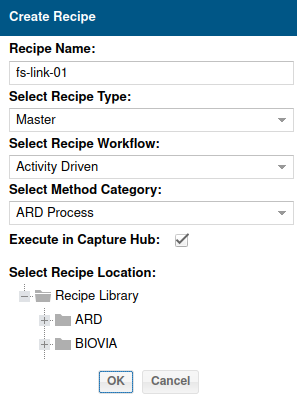
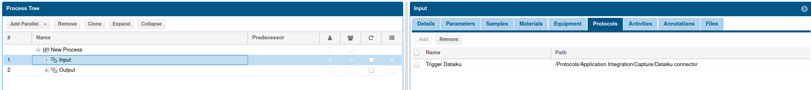
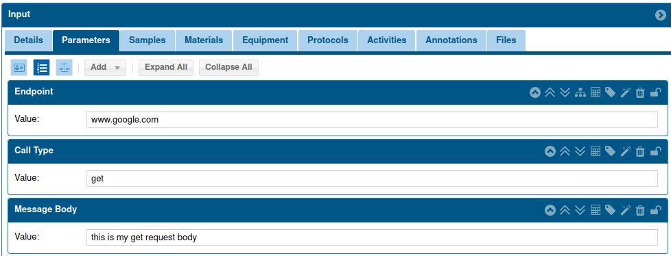
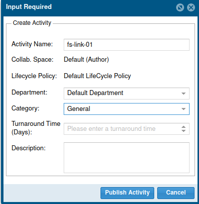
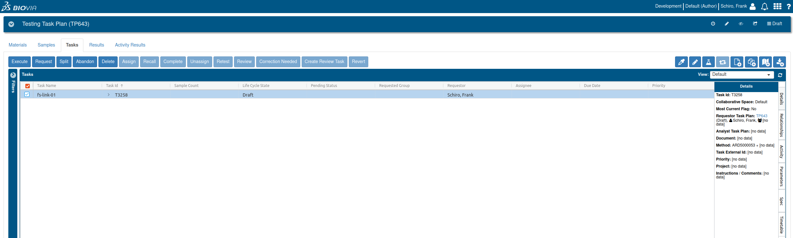
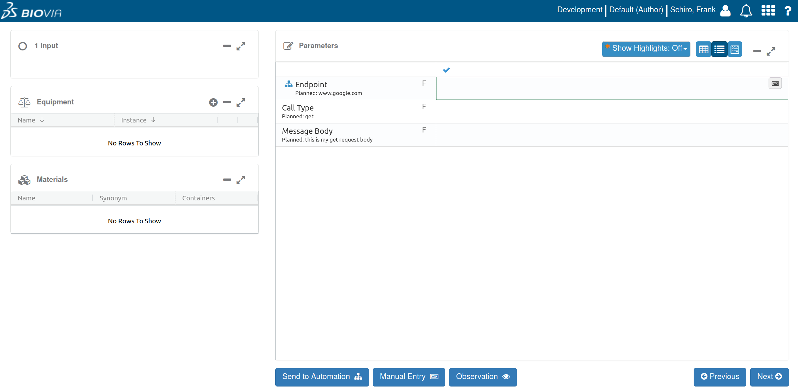
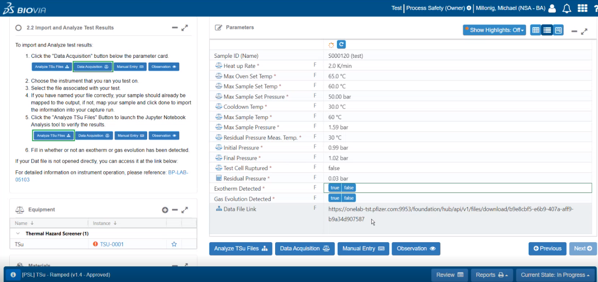

Accesing the System
Site: https://onelab-dev.pfizer.com:9963
Access for me was granted by Michael Milloing
Creating a Recipe
Opening the Recipe Creation Window
Upon entering the site, select the compose icon, or navigate to the menu icon in the top-right corner and choose ‘compose’. Then, click ‘create’.
New Recipe Creation
Fill in the fields as follows:
Recipe Name: Any name of your choice
Recipe type: Select “Master”
Recipe workflow: Select “activity driven”
Select method category: Choose “ARD Process”. This determines the ID number used for referencing the recipe programmatically.
Execute in capture hub: Set to TRUE
Select recipe location: Your choice, location doesn’t matter.
Understanding the Recipe Creation Environment
Navigating the Tabs
Details: You can find the method-id here.
Materials: Lists the materials used (e.g., solvents).
Samples: Shows the method applied to various samples.
Equipment: Lists the equipment used (e.g., balance, HPLC). This tab can contain connection details for various lab equipment.
Process: The primary workspace for designing the steps of your recipe.
Flowchart: Visual representation of your recipe steps.
Instructions: Step-by-step guidance on executing the recipe.
Process Tab
The Process tab is the main area where you define the steps of your recipe.

Here, you can clone the generic stage to create as many stages as you need and modify their names in the rightmost window. This workspace also holds all parameters for the step being created.
Creating a Step in the Process Tab and Linking to a Protocol
This section will guide you through the process of creating a step within the process tab, linking it to a protocol, and adding parameters. The protocol adds a “Send to Automation” button to the task, allowing it to send the step’s parameters to an API or an external endpoint. The response from the API can then either open a website or populate the parameters, given that the names match with the keys returned in the API’s JSON response.
1. Define Step Details and Parameters
In the process tab, we can configure the step details. This includes the creation of text boxes and parameters that store the information required for the process.
Textbox: Any desired text can be entered here. This will be displayed to the end user on the “captures” page.
Parameters: Here, you can compile a list of information to be stored. The parameters can be of various types, such as text-boxes, select-menus, etc.
2. Link the Step to a Protocol
To enable the transmission of information from the capture to a different location (like an API), a protocol needs to be added to the step.
For instance, the Dataiku protocol can be added to the input step of the recipe. In future, there may be an option to use a smart-lab feature, potentially through a Dataiku-connector/protocol that sends data to an API hosted by the Pipeline Pilot application.
NOTE: To create a new protocol, Pipeline Pilot may be required.
3. Map Parameters to the Protocol
The next step involves mapping a parameter to the protocol you just set up. To do this:
Select “mapping-view” using the scales on the parameters tab.
Select the protocol. It should be good to go.
For this example, “collect” is the only available option for “disposition.”
After saving, a “Send to Automation” button will be created. This protocol is simple - it doesn’t take any information from the step itself. Instead, it simply hits an endpoint on the Dataiku server.
4. Add More Parameters
At this point, additional parameters can be added to the step, such as URL, POST, or any parameter. This information can be integrated into whatever protocol we create.
A protocol to contact an API can be created, and parameters for the URL of the API, as well as any other information we want to send to that API, can be added to this step. The protocol can also have global variables.
Below, two more parameters are added, giving a total of three parameters. The parameters view button at the top-left is clicked to change their names to “endpoint,” “call-type,” and “message-body.” In theory, these will be parameters that our protocol, created in Pipeline Pilot, will be able to see.
Adding Parameters

5. Fill in the Parameters
Once the parameters have been created, the “values-view” is selected, and the parameters that our protocol can read are filled in. Although the protocol can read all of the previous steps’ parameters, it is easier to place them all in one step.
Values View Step Params 
By following these steps, you can successfully create a step in the process tab, link it to a protocol, and add parameters. The parameters can then be sent to an API or an external endpoint, with the response either opening a website or populating parameters.
Publishing the Recipe
After saving your work, you’ll find a dropdown near the save button stating “Current State: Draft”. Select this and change the state to ‘publish’. You can set the department and category to any value. Finally, hit ‘publish’.
Testing the Recipe
To test the recipe:
Click on the BIOVIA logo (top-left) to return to the homepage and select “New Task Plan”. Name the plan (e.g., “testing task plan”) and confirm by clicking ‘OK’.
Navigate to the ‘tasks’ tab and select the “create tasks from activities” icon. Use the name filter to locate and add the recipe you created as a task.
Select the task and click the ‘execute’ button.
A window will pop up, displaying all the information entered into the protocol.
Tasks tab and execute button: 
The task will then pop-up in a new window: 
Task/Recipe Example
In this example, a task is created that analysts can import. Clicking on the “Analyze TSu Files” button will open an external website (a Jupyter Notebook). The parameters are primarily filled in by the data-acquisition step of the recipe. These parameters are all sent to the Jupyter Notebook.
Task/Recipe Example: 
One of the parameters, “Data File Link”, is a link to an API that contains a “GUID”. This “GUID” is used to fetch the specific data that the notebook requires.
About Pipeline Pilot
Pipeline Pilot (PLP) is the only environment with a direct connection to ELN. We utilize PLP as an intermediary to reach a different environment. That is, we first interact with PLP and then with our custom API.
Capture Hub API Documentation
Overview
The Capture Hub API provides RESTful endpoints that enable clients to interact with the Capture Hub, including operations like updating parameters, managing process execution lifecycle, and more.
Login and Token Generation
Firstly, you need to generate an access token by making a call to the /security/login endpoint.
POST https://onelab-dev.pfizer.com:9953/foundation/hub/api/v1/security/login Content-Type: application/json
With the request body:
{
"client_id": "foundation-hub",
"username": "{{username}}",
"password": "{{password}}"
}
Replace {{username}} and {{password}} with your credentials.
This token should be included as an authorization header in subsequent requests like so:
Updating Parameters
The parameters of a process execution (PEX) step can be updated via the following endpoint:
Where:
* pexid: This is the unique identifier of the process execution. It can be found in the URL of your PEX or sent via JSON from the PLP.
* stepid: This is the actual step number, which can also be found in the URL after the pexid.
For example:
Prerequisites
Before using the API, please note that:
Clients MUST support cookies.
Only JSON formatted requests and responses are accepted (no XML).
Refresh the Capture UI after updates.
Avoid updating values from both the Capture UI and your clients simultaneously.
Capture Hub Processing Model
The Capture Hub processing model follows the following order:
User inputs are updated and stored individually with each entry or modification.
Equipment and material mapping values are collected.
Server-side calculations are performed, triggered by an update request.
Step Completion
To complete a step, clients must explicitly call the $complete API. Each update request alters the state of the step, but it is not automatically set to completed. This is managed by the server, with various properties being updated in the process.
API Reference
For a complete list of endpoints, their HTTP methods, status codes, and descriptions, please refer to the API Reference.
Examples
Example 1: To login and generate a token:
Example 2: To update a parameter:
Replace {pexid} and {stepid} with the appropriate ids.
Response Scope
The scope of response properties can be controlled by the following $include options:
KEYS: includes processNumber, id = escaped processNumber to be URL safe.
HEADERS: includes metadata information such as displayName. This data is not changed once the step is loaded.
VALUES: includes parameter values.
STATES: includes step state, item states.
Status Codes
200: OK
401: Unauthorized
403: Forbidden
404: Not Found
Endpoints
GET /pex/{pexId}/steps
List all steps in the execution.
Response
[
{
"id": "0",
"processNumber": "0",
"displayName": "New Process",
"phrasing": { /* see parameter */ },
"activationCondition": { /* description & expression */ },
"state": "Done"
},
{
"id": "1",
"processNumber": "1",
"displayName": "Basic",
"phrasing": { /* see parameter */ },
"activationCondition": { /* description & expression */ },
"state": "InProgress"
},
...
]
Status codes are the same as above.
GET /pex/{pexId}/steps/$availableSteps
List steps that are available for data entry and still require some action to complete: - enter new values. - change either item or step state.
Response
Status codes are the same as above. PUT /pex/{pexId}/steps/{stepId}
Update a parameter value.
Update Step API
PUT /pex/{pexId}/steps/{stepId}
This endpoint is used to update the step.
Request
The request must include a list of parameters and a list of target value indices.
Response
The response only includes the changed PARAMETERS block (phrasing, annotations, parameters, material), the STATES block (state, completable, signable, itemStates) and _policy (only when step becomes OutOfDate).
HTTP Status status code reason 202 Accepted 400 Bad Request 401 Unauthorized 403 Forbidden 404 Not Found 422 Unprocessable Entity 500 Internal Server Error
PUT /pex/{pexId}/steps/$complete
This endpoint is used to change pending item states of the step to complete and changes the step state to complete when all items are complete. Request
NA Response
Includes KEYS, STATES and _policy.
PUT /pex/{pexId}/steps/{stepId}/$abandon
This endpoint abandons/unabandons the specified sample/step by itemIndex.
Request
Response
Response only includes - changed ITEM STATES list - completable flag - _policy: only when step becomes OutOfDate
Abandon a step with no samples:
NOTE: A step with no samples cannot be unabandoned.